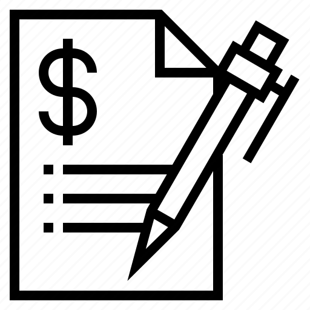
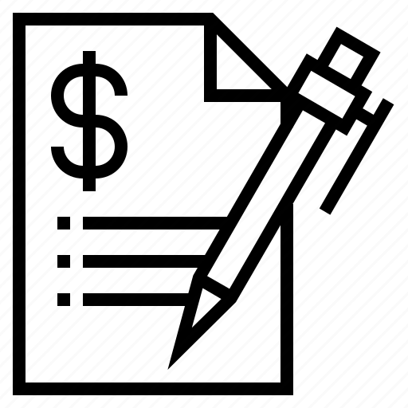

Rehearse
Rehearse
Rehearse
Seriously, rehearse. This early in your career, going into a coding interview and winging it will never get you the results you want.
Obviously, you can't know exactly what will be brought up in an interview, so you will have to improvise a little. But you want to have to improvise as little as possible.
Plan what you are going to say for certain topics that you know will come up. And you can guide the conversation towards those topics to make sure they get covered.
Continue Building Apps!
The most important thing to continue being competitive and learning is to continue making things.
Try making one project for each of the application types below:
Application Holotypes for ideas

 
